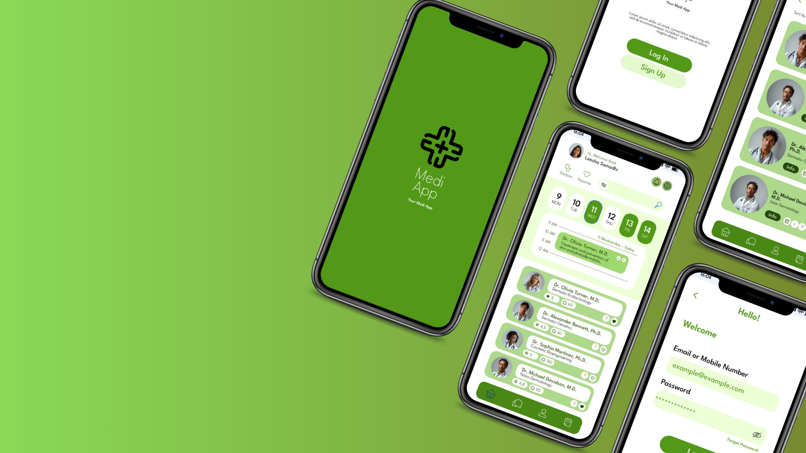
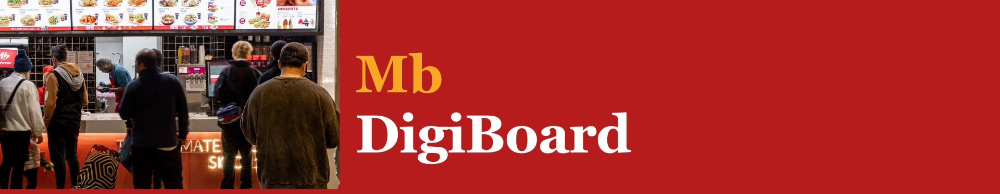
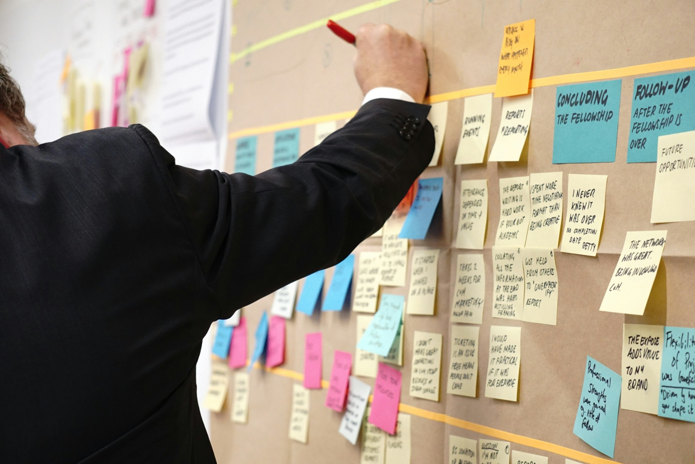

Azure / Workflow automation
From raw incidents to useful data
A council incident pipeline with CSV validation, prepared dashboard metrics and a separation between private processing and public reporting.

UI/UX design / MVP development
Medi App
A patient-centred medical app project spanning business case, Figma design and an MVP built with Cline.
Responsible AI / Assessment project
From prototype to responsible adoption
Screen → Classify → Route → Human review
Responsible AI in aged care
A CrewAI Family Communication Desk, synthetic testing and an AI adoption plan comparing the desk with Heidi Scribe.

Proposed solution / Marrybrown Australia
MB Digi-board
A digital operations dashboard designed to improve kitchen coordination, inventory visibility and shift communication.

User Persona and Kanban Approach
A project focused on creating user personas and implementing a Kanban approach to enhance project management and workflow efficiency.